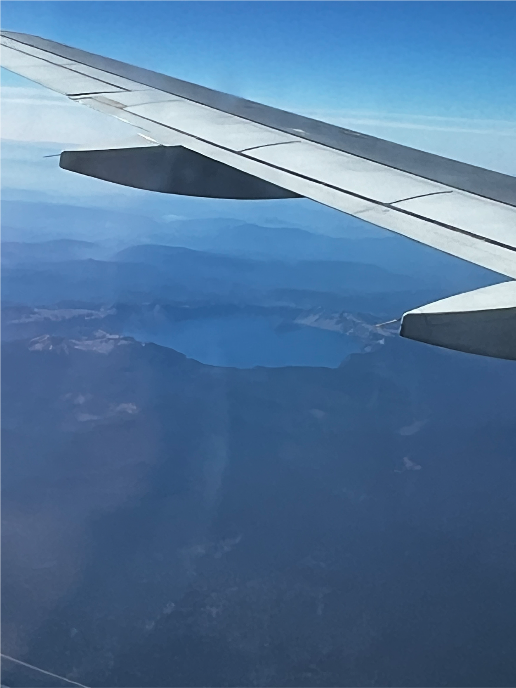

I’m about a month out from my second half marathon and I’m feeling pretty good. I’m visiting Eugene, Oregon right now. I don’t know what’s in the air out here in Track Town, USA, but I’ve been hitting better times than I did back in St. Louis. I occasionally get bummed out that I’m slow. Definitely slower than my high school self at least. I’m a little stronger than the Elita that ran my last half marathon though. That’s something I need to remind myself. That, and the fact that I love running and am blessed to be able to do so whenever I’d like. I’m about a month out from my second half marathon and I’m feeling pretty good. I’m visiting Eugene, Oregon right now. I don’t know what’s in the air out here in Track Town, USA, but I’ve been hitting better times than I did back in St. Louis. I occasionally get bummed out that I’m slow. Definitely slower than my high school self at least. I’m a little stronger than the Elita that ran my last half marathon though. That’s something I need to remind myself. That, and the fact that I love running and am blessed to be able to do so whenever I’d like.

Finding cairns, these stacks of rocks marking the trail is always delightful. If only they had those in real life. It can be difficult to determine...read on
Mushrooms are such peculiar, unassuming little things. They can hold whole universes of communication in their mycelium...read on
Heading out to Oregon, I spotted what I think is Crater Lake? It’s amazing how much you can see when you’re at 30,000 ft...read on